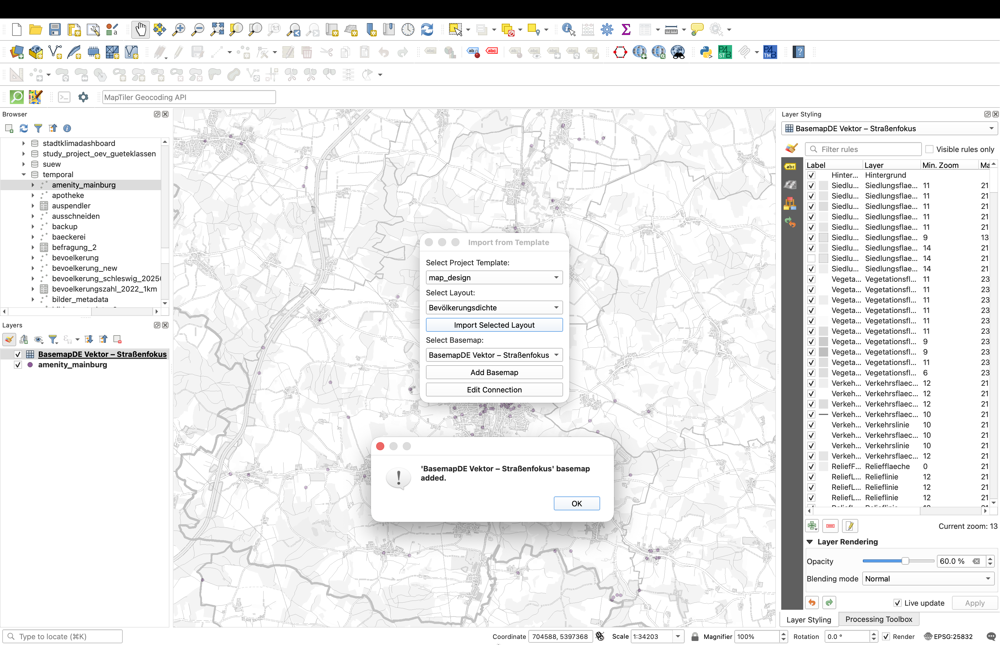
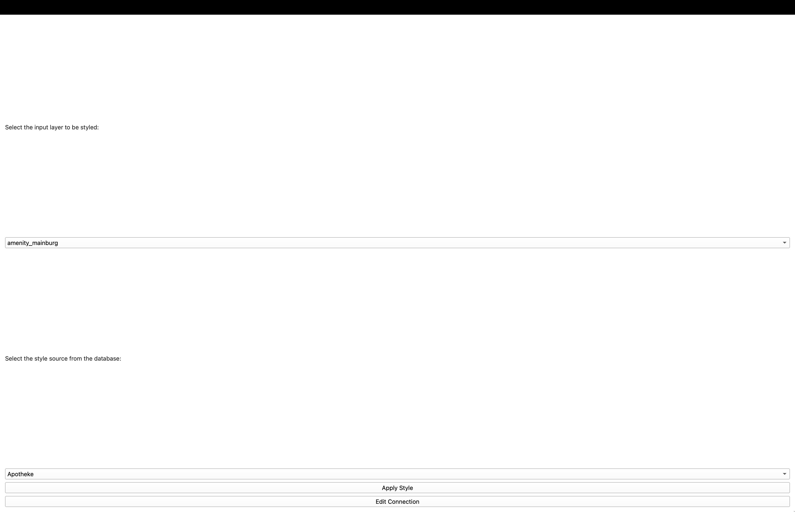
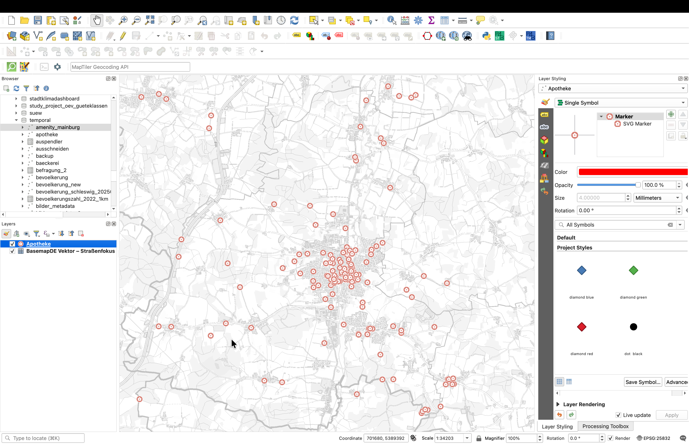
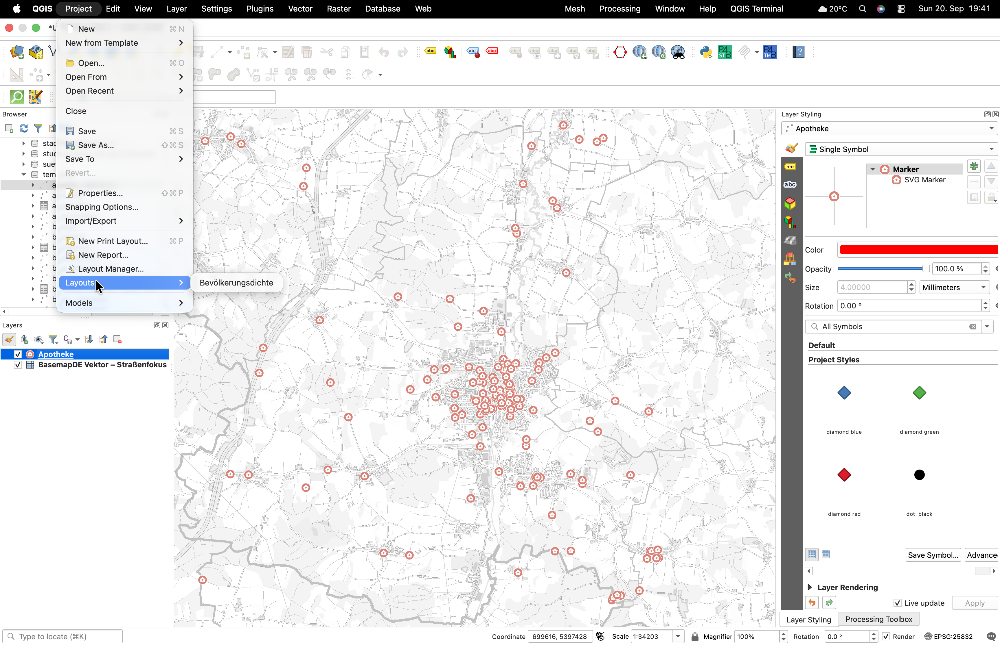
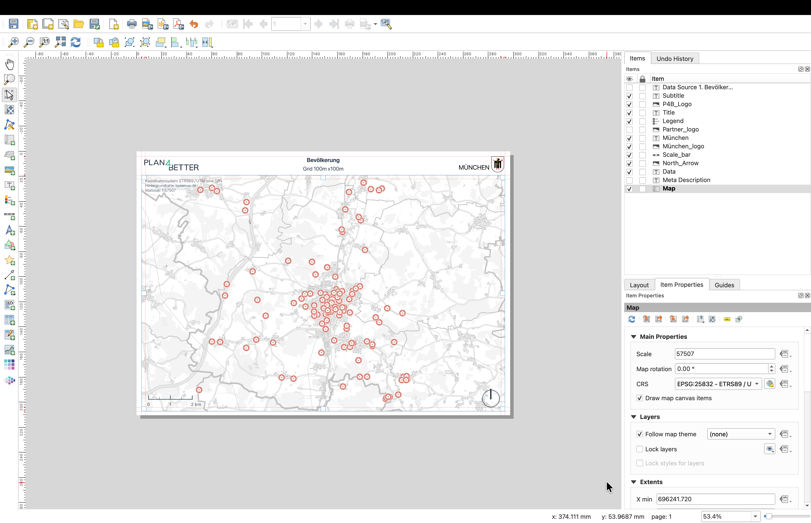

PLAN4BETTER · PYQGIS
Vom Datenbank-Layer zur fertigen Karte.
Ein zusammenhängender QGIS-Workflow, den ich entwickelt habe: gemeinsame Basiskarte und Layout ergänzen, den korrekten Datenbankstil auf den Projektlayer anwenden und die fertige Karte mit ihrer Beschreibung als PNG-Metadaten exportieren.
01 / LAYOUT TOOLS
Die gemeinsame Basiskarte in das QGIS-Projekt laden.
Das Projekt enthält bereits den Datenbank-Layer amenity_mainburg. Mit Layout Tools füge ich BasemapDE Vektor – Straßenfokus aus der gemeinsamen Projektvorlage hinzu. Im vollständigen QGIS-Layerpanel erscheint die neue Basiskarte unter dem Datenbank-Layer.
{kind=link}

02 / P4B STYLING
Den passenden Datenbankstil anwenden und den Layer umbenennen.
Mit Layer und Basiskarte im Projekt liest P4B Styling den aktiven Vektorlayer und zeigt nur kompatible PostgreSQL-Stile. Hier ist der Eingabelayer amenity_mainburg und der gewählte Punktstil Apotheke. Nach dem Anwenden ändern sich die Symbole und der Anzeigename wird zu Apotheke.
{kind=link}

{kind=link}

Was der Code macht
Er lädt QML-Definitionen aus PostgreSQL, filtert die Stile nach dem QGIS-Geometrietyp, speichert das gewählte QML temporär, ruft loadNamedStyle() auf, aktualisiert die Karte und benennt den Layer um. Geometrien und Sachdaten bleiben unverändert.
03 / LAYOUT TOOLS
Das importierte Drucklayout öffnen.
Das aus der gemeinsamen Vorlage ausgewählte Layout wird in QGIS registriert und erscheint unter Projekt → Layouts. Durch Öffnen von Bevölkerungsdichte wird die Vorlage im Layout Manager mit Kartenrahmen, Titel, Legende, Logos, Maßstab, Nordpfeil und Metadatenfeldern bereitgestellt.
{kind=link}

{kind=link}

04 / EXPORT WITH METADATA
Karte exportieren und die Beschreibung anhängen.
Das Exportwerkzeug wählt ein oder mehrere QGIS-Drucklayouts, rendert sie mit 300 dpi und speichert sie als PNG. Es liest das Layoutelement Description, bereinigt Zeilenumbrüche und speichert diese Notiz zusammen mit einem Autor-Feld als PNG-Metadaten.
Damit können Karte und Kartennotiz später gemeinsam ausgelesen und einem LLM als Kontext übergeben werden. Das Plugin selbst ruft kein LLM auf.
ERGEBNIS
Ein wiederholbarer Produktionsablauf direkt in QGIS.
Layout Tools bringt standardisierte Basiskarten und Layouts ins Projekt. P4B Styling macht den Projektlayer verständlich und einheitlich benannt. Der Export bewahrt die Kartennotiz mit der fertigen Bilddatei. Mein Zwischenzeugnis bestätigt den internen Einsatz der Stil- und Layout-Plugins sowie eine schnellere, einheitlichere Kartenproduktion.
Python · PyQGIS · Qt · PostgreSQL · QML · XML · Pillow